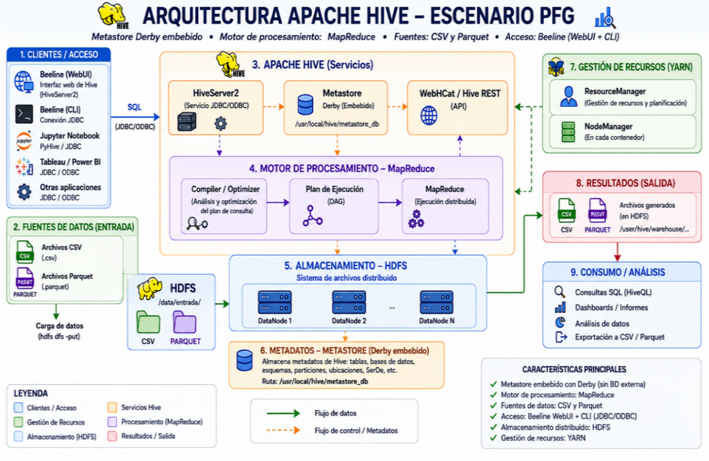
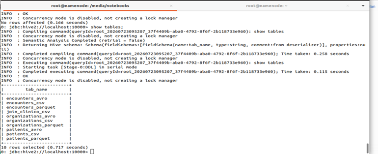

Ejercicio Final 3: Apache Hive sobre el clúster Hadoop
Una vez desplegada la infraestructura Big Data basada en Hadoop sobre contenedores Docker, se propone en este ejercicio utilizar Apache Hive para realizar operaciones de consulta e integración de información sobre los conjuntos de datos disponibles en el clúster.
El objetivo es que el estudiante comprenda cómo Hive permite trabajar con grandes volúmenes de información almacenados en HDFS, utilizando una interfaz de consulta basada en SQL denominada HiveQL.
Para ello se emplearán los conjuntos de datos clínicos patients, encounters y organizations, disponibles en diferentes formatos de almacenamiento.
Objetivo del ejercicio
El objetivo principal consiste en realizar una operación de integración mediante JOIN entre los tres conjuntos de datos y comparar su ejecución utilizando dos paradigmas de procesamiento distribuido: Hadoop Streaming mediante MapReduce y Apache Hive.
Configuración de Apache Hive
Antes de realizar las consultas es necesario disponer de Apache Hive configurado en la infraestructura Hadoop.
El nodo NameNode actúa como punto central de acceso al entorno Hive. En este entorno se dispone del componente metastore, encargado de mantener la información asociada a las tablas, esquemas y tipos de datos.
Los datos propiamente dichos permanecen almacenados en HDFS, mientras que Hive utiliza los metadatos para conocer cómo interpretar y consultar dicha información.
En el entorno desarrollado para este proyecto se utiliza el sistema embebido Apache Derby como base de datos de metadatos.
Hive también permite aprovechar el procesamiento distribuido proporcionado por MapReduce. Además, dispone de mecanismos de conexión como JDBC, ODBC y Thrift para facilitar el acceso desde otras aplicaciones.
1. Preparación y almacenamiento de los datos
Antes de comenzar las consultas es necesario disponer de los conjuntos de datos en los diferentes formatos que serán utilizados durante el ejercicio.
1.1 Generación de CSV, Avro y Parquet
Los conjuntos de datos utilizados son:
- patients: información relacionada con los pacientes.
- encounters: información sobre los encuentros médicos.
- organizations: información sobre las organizaciones sanitarias.
Cada conjunto de datos será preparado en los formatos CSV, Avro y Parquet.
1.2 Carga de los datos en HDFS
Una vez generados los diferentes formatos, los ficheros deben ser almacenados en el sistema de archivos distribuido HDFS.
La información se organiza mediante directorios independientes para cada conjunto de datos y formato. En el caso de Avro se dispone además de los correspondientes esquemas .avsc.

Organización de los directorios correspondientes a los formatos Avro y Parquet. Fuente: elaboración propia.
2. Preparación del procesamiento mediante Hadoop Streaming
Una vez disponibles los datos en HDFS, se desarrolla una solución basada en Hadoop Streaming para realizar la unión de los tres conjuntos de datos mediante el modelo MapReduce.
La relación entre los datos se establece utilizando los identificadores comunes presentes en los diferentes ficheros.
La relación se establece mediante el campo PATIENT.
La relación se establece mediante el campo ORGANIZATION.
Proceso Map
El Mapper debe leer los registros procedentes de los tres conjuntos de datos, identificar el tipo de registro y extraer la clave utilizada para realizar la unión.
- Los registros de pacientes utilizan PATIENT.
- Los registros de organizaciones utilizan ORGANIZATION.
- Los registros de encounters contienen la información necesaria para establecer ambas relaciones.
Proceso Reduce
El Reducer recibe los registros agrupados mediante sus claves de relación y realiza la combinación de la información.
El resultado final debe contener la información del encuentro médico junto con los datos correspondientes al paciente y a la organización sanitaria asociada.
3. Apache Hive
Una vez cargados los conjuntos de datos en HDFS, se procede a su incorporación a Apache Hive mediante la creación de las tablas correspondientes.
Las tablas se prepararán para los tres formatos utilizados: CSV, Avro y Parquet.
3.1 HiveServer2 y cliente Beeline
Para realizar las consultas se utiliza el cliente Beeline, que permite establecer una conexión JDBC con HiveServer2.
La conexión utilizada en este proyecto es:
3.2 Creación de la base de datos y tablas.
Una vez comprobado el correcto funcionamiento de HiveServer2, el siguiente paso consiste en crear la base de datos que se utilizará para almacenar y analizar los diferentes conjuntos de datos empleados en el proyecto.
En la configuración utilizada en este proyecto, la creación de la base de datos y de las tablas de Hive se realiza directamente desde el cliente de línea de comandos Beeline. Jupyter Notebook se utilizará posteriormente para realizar tareas de análisis y explotación de los datos, pero no será el entorno empleado para ejecutar las sentencias de creación de las tablas de Hive.
USE healthcare;
A partir de este momento, todas las operaciones de creación y gestión de tablas realizadas mediante Beeline se ejecutarán dentro de la base de datos seleccionada.
Consulta de las tablas creadas en Hive
Finalmente, para consultar los objetos creados en Hive y sobre los
cuales se podrán realizar las consultas posteriores, se puede ejecutar
la instrucción SHOW TABLES;. Esta sentencia permite
visualizar las tablas disponibles en la base de datos actualmente
seleccionada.
Desde la consola de Hive se ejecuta:
Como se puede observar en la siguiente figura, Hive muestra el listado de las tablas creadas durante los ejercicios anteriores, incluyendo las correspondientes a los formatos CSV, Avro y Parquet.

El resultado confirma que los objetos han sido creados correctamente y que se encuentran disponibles para realizar las consultas y operaciones de análisis posteriores.
3.3 Creación del JOIN
Una vez creadas y cargadas las tablas, se ejecuta una operación INNER JOIN entre encounters, patients y organizations.
El objetivo es obtener una visión integrada de la información clínica relacionando cada encuentro con el paciente y la organización sanitaria correspondiente.
4. Ejecución y comparación de resultados
Para evaluar las diferentes soluciones se ejecuta el mismo proceso de integración utilizando dos mecanismos de procesamiento distribuido:
- Hadoop Streaming mediante MapReduce.
- Apache Hive.
Las pruebas se realizan utilizando los mismos conjuntos de datos y condiciones equivalentes, permitiendo comparar el efecto del formato de almacenamiento y del framework de procesamiento.
Indicadores analizados
- Tiempo total de ejecución.
- Consumo de memoria.
Resultados con Hadoop Streaming
| Formato | Tiempo de ejecución |
|---|---|
| Parquet | 7,55 segundos |
| Avro | 13,96 segundos |
| CSV | 104,86 segundos |
En las pruebas realizadas mediante Hadoop Streaming, Parquet obtuvo el mejor tiempo de ejecución, seguido de Avro y, finalmente, CSV.
Resultados con Apache Hive
| Formato | Tiempo de ejecución |
|---|---|
| CSV | 76,43 segundos |
| Avro | 76,68 segundos |
| Parquet | 161,61 segundos |
En el entorno experimental utilizado, los resultados obtenidos mediante Hive presentan un comportamiento diferente al observado con Hadoop Streaming. El formato CSV obtuvo el menor tiempo, seguido de Avro, mientras que Parquet presentó el mayor tiempo de ejecución.
Medición del proceso
Para automatizar la ejecución de las pruebas se desarrollaron dos componentes en Python: MonitorProceso y MedirProceso.py.
La clase MonitorProceso permite ejecutar procesos externos y supervisar su comportamiento durante la ejecución. Para ello se emplean las bibliotecas subprocess, time y psutil.
El script permite obtener información relacionada con el tiempo de ejecución y el consumo de memoria de cada prueba.
Conclusiones
Los resultados obtenidos muestran diferencias significativas entre los formatos CSV, Avro y Parquet, especialmente cuando se utiliza Hadoop Streaming.
En las pruebas realizadas con MapReduce, Parquet presentó el mejor rendimiento, con un tiempo de 7,55 segundos. Avro obtuvo un tiempo de 13,96 segundos, mientras que CSV alcanzó 104,86 segundos.
En cambio, mediante Apache Hive los resultados fueron diferentes: CSV presentó un tiempo de 76,43 segundos, Avro de 76,68 segundos y Parquet de 161,61 segundos.
Estos resultados deben interpretarse teniendo en cuenta las características del entorno experimental, especialmente el reducido tamaño del clúster docente y el volumen moderado de datos utilizados.
Comparación de paradigmas
MapReduce proporciona un mayor control sobre las diferentes fases del procesamiento mediante los componentes Mapper y Reducer, aunque requiere un mayor esfuerzo de programación.
Por otro lado, Apache Hive simplifica considerablemente la realización de operaciones complejas mediante sentencias SQL, reduciendo el esfuerzo necesario para implementar y mantener los procesos.
Ejercicio Final 3. Integración y comparación de información clínica mediante Hadoop Streaming y Apache Hive sobre el clúster Hadoop desarrollado en el proyecto.